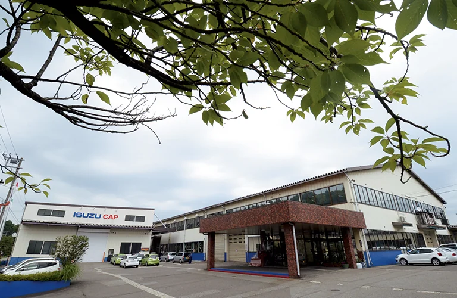
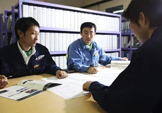
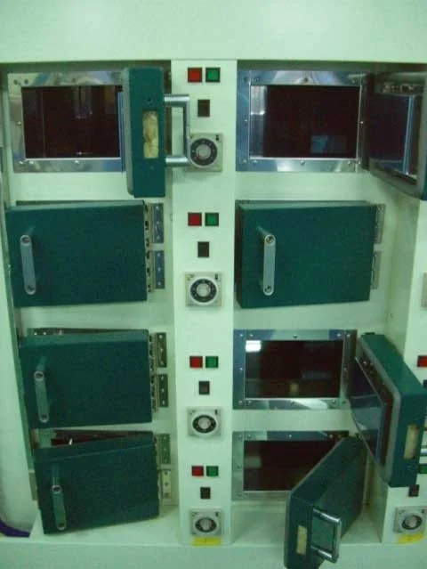

信頼できる製品が当たり前に存在する社会
製品が安全に、長く使われ、安心して社会の中で機能し続ける世界を目指します。

人を大切にする姿勢と、環境試験技術による社会への貢献。この二つは、いすゞ製作所のものづくりを支える考え方です。
社会やお客様の役に立つことと、環境への配慮を両立させる。製品の品質と安全性を支える環境試験装置のものづくりを通して、持続可能な社会に貢献することを目指します。
※経営構造整理資料の理念表現。Corporate Mind 2021の「人に求められ、地球に優しい製品作り」との正式な用語の整合は確認待ちです。
製品が安全に、長く使われ、安心して社会の中で機能し続ける世界を目指します。
温度・湿度などの試験環境をつくり、製品の耐久性・信頼性の検証を支援する。目に見えないリスクを明らかにするための装置を提供することが私たちの役割です。
標準製品の枠にとらわれず、お客様ごとに異なる試験条件や使い方を理解し、その目的に合った装置づくりを考えます。
製品の長寿命化や省エネルギー、最適な設計・製造を意識し、環境への負荷を抑えるものづくりを目指します。
研究開発や製品検証の基盤となる試験環境を提供し、身の回りの製品の品質と安全を陰から支えます。
Corporate Mindは、製品だけでなく、その製品に関わる人への向き合い方を大切にしています。

お客様の要望や想いを丁寧に受け取り、技術者同士で知恵をつなぎ、完成した装置を確実に次へ手渡す。人から人へと仕事をつなぐ姿勢を大切にします。
一人の力だけでなく、設計・製造・検査・サポートに関わる人たちの力を重ねることで、よりよい装置づくりを目指します。
技術と想いを丁寧に扱い、確実に次の人へつなぐ。
社員が前向きに、気持ちよく働ける環境を大切にする。
お互いを尊重し、チームとして品質をつくり上げる。
Corporate Mindでは「心を込めて」「心を通わせる」「心が動く」という考え方を紹介しています。技術の正確さだけではなく、相手の立場に立ち、互いに協力し、仕事に誇りを持つことが、いすゞ製作所の企業文化を形づくっています。
いすゞ製作所で働く人・採用情報を見る ↗温度・湿度に関する技術を原点に、環境試験機器の設計・製造から検査、アフターサポートまでを担っています。
求められる試験条件は、製品や開発目的によって異なります。既製の装置で対応できる場合もあれば、寸法・温湿度条件・制御方法などを個別に検討する必要がある場合もあります。
いすゞ製作所は、標準装置の提供に加えて、個別条件に合わせた特型・カスタマイズ装置の開発・製造にも取り組んでいます。相談の段階で条件がすべて決まっていなくても、分かっている情報から検討を進められるようにしています。
特型・カスタマイズを見る ↗
恒温恒湿試験機、恒温試験機、産業用恒温試験機など、用途に応じて選べる製品を提供します。
製品ラインナップ ↗必要な試験条件や製品の使い方に合わせて、装置の構造・仕様を個別に検討します。
特型装置への対応 ↗意匠設計・設計から板金加工、溶接、塗装、組立、検査まで、製造に必要な工程をつなぎます。
製造工程と品質管理 ↗ご相談 → 経験と知恵 → 意匠設計 → 設計 → 抜く → 曲げる → 溶接 → 塗る → 組立 → 検査
※旧公式の工程分類です。2026年11月の議事録では「意匠設計」と「設計」を分ける方針を確認。現行工程名・写真は最終校正待ちです。環境試験装置は、製品の耐久性や安全性を検証するために使われるもの。その信頼性を支えるものづくりを大切にしています。
旧公式サイトでは、製品検査、計測器管理、校正、トレーサビリティなどへの取り組みを紹介しています。製品の信頼性を支える体制として、最新の実施状況を確認しながら情報を引き継ぎます。
技術・品質の詳細 ↗旧公式にはISO 9001認証（JQA-1638）の記載があります。認証マーク、最新認証範囲、有効性は正式な証明書で確認した後に反映します。
省電力を考慮した製品づくりや長く使い続けられる装置の提供は、企業理念を具体化する大切な取り組みです。環境数値や認証は根拠資料に基づいて紹介します。
環境への取り組み ↗Corporate Mind 2021では、工業規格、省電力、講演活動、インターンシップ受け入れ、災害対策、ボランティア活動など、社会とのつながりを紹介しています。以下は2021年の冊子にある活動テーマであり、現在の継続状況と最新実績は確認待ちです。
企業理念を、これからのものづくりにどうつなげていくか。
会社の基本情報と、事業の拠点をご案内します。
1938年の創業から現在まで。既存公式サイトの記録と2026年8月の顧客原稿を両方残し、沿革を統合しています。
温度・湿度を測る技術を原点に
カスタマイズ提案型商品を展開
生産設備をさらに拡充
東京で理化学・気象器械の製造販売を開始
旧公式沿革／A31既存島津製作所より独立し、自記温湿度計を販売（顧客原稿による表現。創業経緯の正式表記を要確認）
2026年8月顧客原稿社名を株式会社いすゞ製作所へ変更
旧公式沿革／A31既存気象庁検定槽を導入
2026年8月顧客原稿恒温恒湿試験機および恒温試験機を販売
2026年8月顧客原稿埼玉工場が竣工
旧公式沿革／A31既存新潟工場が竣工し事業を拡大
旧公式沿革／A31既存EC指令適合認証の記録
旧公式沿革／A31既存ISO 9001の認証取得（当時の記録）
旧公式沿革／A31既存自動ベンディングロボットシステム導入
旧公式沿革／A31既存ネットワーク対応型ベンディング設備導入
旧公式沿革／A31既存恒温恒湿試験機HPシリーズ・産業用恒温試験機を販売。プレスブレーキ「アマダ NT8025」を導入
2026年8月顧客原稿CNCタレットパンチプレスとCAD/CAM連携を構築
旧公式沿革／A31既存カスタマイズ提案型商品を展開
2026年8月顧客原稿東京営業所・新潟営業所を開設
旧公式沿革／A31既存生産管理システム導入とトレーサビリティ整備
旧公式沿革／A31既存日本試験機工業会へ加盟
旧公式沿革／A31既存みどりシリーズ「わかば」を発売
旧公式沿革／A31既存ものづくりセンター・検査室を設立
旧公式沿革／A31既存みどりシリーズ「ふたば」を発売
旧公式沿革／A31既存資材倉庫を新設しタレットパンチングプレスを導入
旧公式沿革／A31既存ISUZU CAP 大宮を開設
旧公式沿革／A31既存みどりシリーズ「あおば」を発売
旧公式沿革／A31既存ISUZU CAP 仙台を開設
旧公式沿革／A31既存新潟いすゞとの合併により本社機能を新潟へ
旧公式沿革／A31既存大宮・仙台を統合しISUZU CAP 関東を開設
旧公式沿革／A31既存ISUZU CAP 関西を開設
旧公式沿革／A31既存関川博氏が代表取締役社長に就任
旧公式沿革／A31既存校正室を開設
旧公式沿革／A31既存ISUZU CAP 関西を吹田市へ移転
旧公式沿革／A31既存ISUZU CAP 関東を武蔵村山市へ移転
旧公式沿革／A31既存タレットパンチングプレス「アマダ VIPROS King」を導入
2026年8月顧客原稿CAP 関東を東京に、CAP 関西を大阪に改称
旧公式沿革／A31既存機能型出荷ポートを新設
2026年8月顧客原稿ファイバーレーザ加工機「村田機械 LS 2512 HL」、プレスブレーキ「村田機械 BH8525」を導入
2026年8月顧客原稿沿革は「旧公式/A31既存」と「2026年8月顧客原稿」を統合した校正用データです。重複した出来事、月日の差異、創業の表現は顧客確認後に最終統一します。
製品のご相談やサポートについて、各拠点から対応します。
〒955-0151
新潟県三条市荻堀字藤平1397-42
FAX 0256-46-2601
地図を開く ↗〒208-0004
東京都武蔵村山市本町2-1-6 第二古川ビル3階
FAX 042-569-6941
地図を開く ↗〒564-0051
大阪府吹田市豊津町23-4 石田ビル101
FAX 06-6170-9893
地図を開く ↗旧公式サイトには韓国総代理店の記載があります。掲載する場合は現行の代理店契約、名称、連絡先、営業対応地域を確認します。
旧公式では、新潟県三条市荻堀1088-14の研修施設として紹介されています。社内研修や人材育成のための施設であり、現在の利用状況を確認してご案内します。
Corporate Mindに掲載されたCAPの考え方。お客様への向き合い方、主体的な行動、伝える姿勢を大切にするブランドの姿勢として紹介します。
※CAPの英語表記はCorporate Mind 2021の誌面に基づきます。現行ブランド定義としての使用は最終確認待ちです。
標準製品の選定から特型・カスタマイズまで、用途や目的に応じた窓口をご案内します。